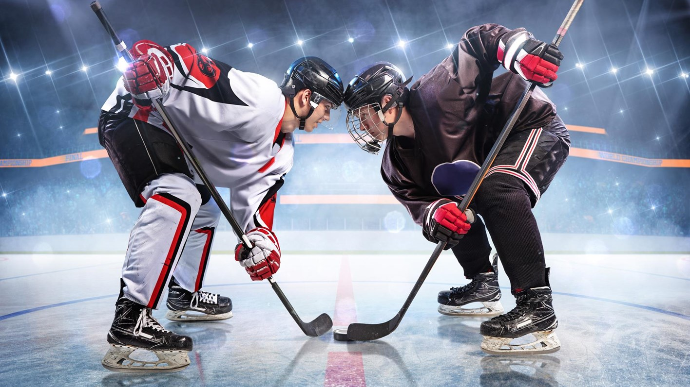

Understanding Hockey
A guide to watching Hockey for newcomers.
Is Hockey Hard?
Brendan Shananhan played in the NHL from 1987-2009 with 3 stanly cup championships. One time in an interview he was asked "Is Hockey hard?", his response...
"Is hockey hard? I don't know, you tell me. We need to have the strength and power of a football player, the stamina of a marathon runner, and the concentration of a brain surgeon. But we need to put all this together while moving at high speeds on a cold and slippery surface while 5 other guys use clubs to try and kill us. Oh yeah, did I mention that this whole time we're standing on blades 1/8 of an inch thick? Is ice hockey hard? I don't know, you tell me. Next question." - Brendan Shananhan
Hockey may be hard to play but it isn't hard to enjoy. This webpage will help you learn the game so you can enjoy watching
Hockey is one of the hardest sports to play but when you have a basic understanding of the base of the game and the rules, it will be one of the most exceting and enjoyment you will get from watching a sport. Hockey is a 5 on 5 with one goalie on each team (6 on 6), team sport where the objective is to score more goals then the other team. Hockey has 3, 20 minute periods rather then 2 hafts or 4 quarters, and stop's the clock on every whistle so every second of those 60 minutes is filled with high pace acting. There are penatlys like other sports but instead of a free kick / shots or loseage of yards, if you get a penatly you sit in the penatly box for 2 mintues giving the other team an man avantage.
That is a very short and vag desription of a game of hockey, to learn more about the basics of the game please visit are Hockey Bacics page. To learn more about the rules plase vist are Rules of Hockey page.
